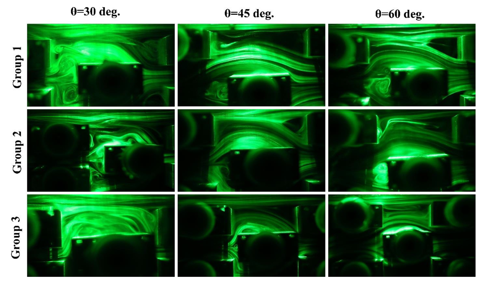

My Research
Thermodynamics, Heat Transfer and Fluid Flow
As one of the most important challenges facing the world today, energy efficiency has been a major focus of my research. My work has involved both computational and experimental investigations into improving energy utilisation and heat transfer. These projects have included examining how different cooling system configurations can improve efficiency, as well as how the arrangement and geometry of finned tubes can enhance heat transfer while reducing pumping requirements. My research has combined experimental investigations with computational simulations using established software packages and the development of in-house computer codes to model these phenomena. The findings have been published in international journals.
Experimental study and numerical simulation of thermal hydraulic characteristics of a finned oval tube at different fin configurations
In this study, we investigated the effects of finned oval-tube arrangements on heat transfer enhancement. We used dye generation and visualisation techniques to follow the airflow paths and capture the streamlines and wakes behind the tubes. We also simulated the experimental settings using a computer to obtain useful information about fluid velocity, temperature, and pressure along the flow paths and at different locations. This helped us determine the temperature distribution and identify potential ways to improve heat transfer and fluid flow. These findings could be used to design new generations of heat exchangers for a wide range of applications, from air conditioning and automobiles to industrial heating and cooling systems.


The schematic of the meshed domain for the finned oval tube
The experimental observation of fluid flow over heated finned oval tubes
I have published two papers in this subject investigating the geometry of fins as well as arrangement of the finned tubes as a tube bundle. The links to the journal papers are provided below:
A comprehensive analysis of a laboratory scale counter flow wet cooling tower using the first and the second laws of thermodynamics
Cooling towers are important components of large industrial complexes, particularly in locations where sufficient water resources are available. They use the latent heat of evaporation to cool the circulating water. Therefore, the main goal is to increase air–water contact as the two streams pass through the tower. This can improve heat and mass transfer and enhance the cooling performance of the tower. To evaluate this idea, we used a new type of packing material in the cooling tower and recorded our observations during the experiments. We then used these recordings as inputs to a computer code to calculate the required parameters for evaluating the tower's performance and efficiency..


The schematic of the cooling tower used for study
The cooling tower used for study
The link to the journal paper is provided below:
Heat transfer enhancement in channels with roughened and elastic walls
I developed a novel concept in which elastic walls with roughened surfaces could enhance heat transfer in channels. The idea was to use wall oscillations to perturb the fluid flow, increase local flow velocities, and improve fluid mixing in regions where heat is generated. I investigated three different types of surface roughness on the upper wall, where a heat-generation boundary condition was applied. An elastic wall was placed on the bottom side of the channel and could oscillate when required.
This concept could be useful in applications where excessive temperatures pose a risk of system failure, particularly during emergency situations. Under normal operating conditions, the elastic wall could remain stationary and function as a conventional channel wall. When additional cooling is required, the wall could be activated to oscillate, potentially enhancing fluid mixing and heat transfer to help control the temperature.


The schematic of the upper roughened wall and elastic bottom wall
Velocity contour inside the channel when the elastic wall is moved inside the channel
The link to the journal paper is provided below:
Mathematical Modelling, Systems Biology and Tumor Growth
As a mechanical engineer, I have used my knowledge of mechanical engineering and coding skills to turn mathematical models of biological systems into computer simulations. These simulations allow us to study how our bodies function and how diseases develop under different conditions. For example, we can investigate how tumours grow, what factors affect their growth, and how their growth might be controlled. We can also study how cells function to keep us alive and how they interact with one another. I find these topics fascinating because they have the potential to advance scientific understanding and improve human health.
Mathematical modeling reveals how the density of initial tumor and its distance to parent vessels alter the growth trend of vascular tumors
Cancer is one of the leading causes of death worldwide, second only to cardiovascular diseases. As a result, it remains an important area of scientific research. Cancer cells proliferate rapidly and require nutrients to support their growth. To meet these demands, tumours can stimulate the formation of new blood vessels through a process called angiogenesis, increasing the supply of oxygen and nutrients to the tumour. This vascular network can support further tumour growth.
I developed an extensive computational model, implemented primarily in C++, to capture this phenomenon. I also proposed novel approaches to using anti-angiogenic drugs to inhibit blood vessel formation and potentially limit tumour growth. Furthermore, we used artificial intelligence techniques to explore tumour growth under conditions beyond those covered by our simulations and to predict its behaviour across a broader range of scenarios. The results have been published in international scientific journals.


The schematic of the tumour microenvironment
The vascular network at different tumour placement inside the tissue relative to the main vessel
I have published four papers in this subject investigating the tumour microenvironment. The links to the journal papers are provided below:
- Mathematical modeling reveals how the density of initial tumor and its distance to parent vessels alter the growth trend of vascular tumors
- Mathematical simulation and prediction of tumor volume using RBF artificial neural network at different circumstances in the tumor microenvironment
- A novel numerical and artificial intelligence based approach to study anti-angiogenic drugs: Endostatin
- A spatiotemporal multi-scale computational model for FDG PET imaging at different stages of tumor growth and angiogenesis
- Translational models of tumor angiogenesis: A nexus of in silico and in vitro models
The Automated Construction and Verification of Physically Plausible Models of Physiological Systems
During my PhD, I worked on mathematical models of cellular mechanisms and signal transduction pathways. My main research focused on developing methods that researchers can use to verify their models during the model development process. All models, whether biological or otherwise, should be consistent with the laws of physics and thermodynamics to represent physically plausible real-world systems. Therefore, when constructing a model, researchers must ensure that their assumptions do not violate the relevant physical and thermodynamic principles.
I used these principles to develop an automated tool, called BioMLVerify, that checks whether mathematical models comply with fundamental engineering principles. The tool was developed in Python, with a focus on making it user-friendly and straightforward to use.


The schematic of finger and its bond graph representation
Heart and the bond graph representation of blood flow though aorta
The link to the journal paper is provided below: